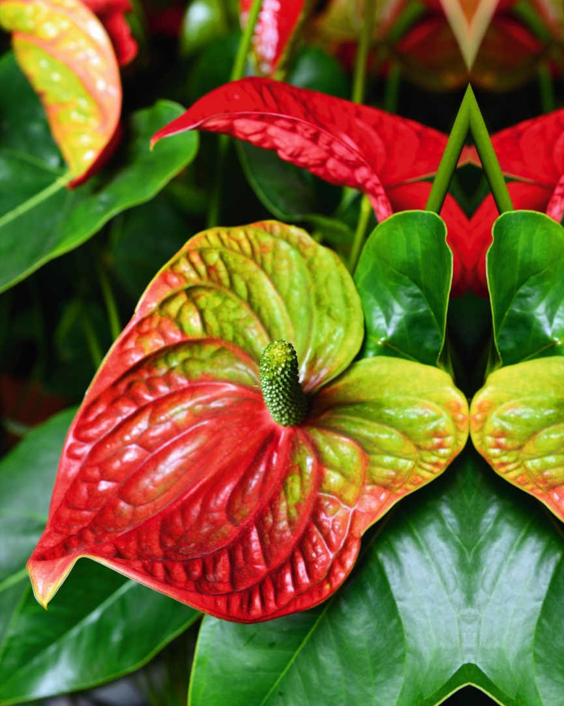
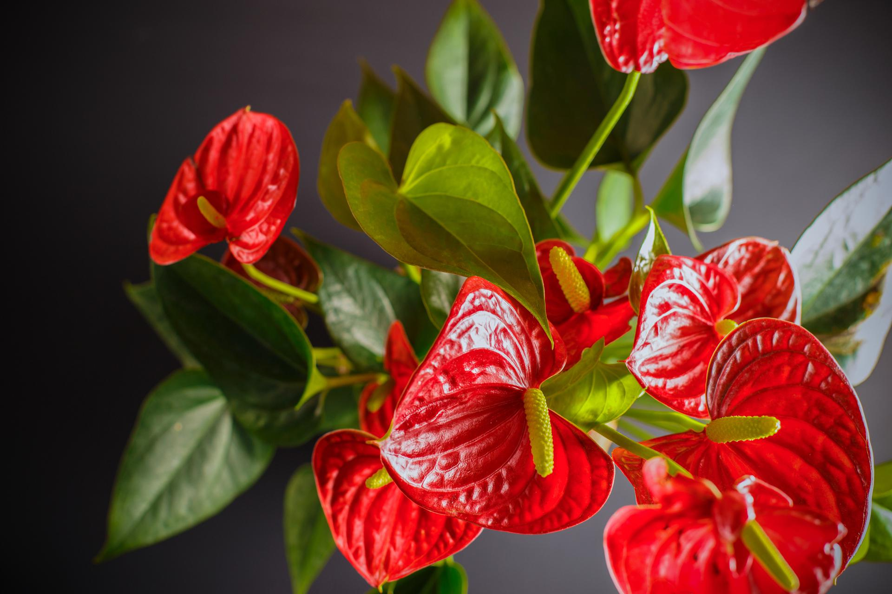

Witaj na flores.pl!
Kwiat anturium (Anthurium)
~ dr Magdalena Narkiewicz, KJ
10-06-2019 15:27
Anturium - czyż może być coś wspanialszego od daru wielkiego serca? Jego symbolem jest kwiat anturium, piękny i znacznie trwalszy od innych. W naturze anturia zasiedlają korony drzew od Meksyku po Panamę. Mają upodobania podobne do storczyków.
Anturium (Anthurium) to tropikalna, wiecznie zielona i trwała bylina. Liście owalne lub sercowate, błyszczące. Kwiaty zebrane w kolbę, u podstawy której wyrasta jaskrawo zabarwiona pochwa kwiatostanowa (spatha). Roślina doniczkowa i uprawiana w szklarni na kwiat cięty. W wazonach mogą stać ponad miesiąc. Natomiast rośliny osiągające wysokość 50-90 cm świetnie spisują się jako kwiaty doniczkowe. Wiele takich odmian to mieszańce anturium Andreego i drobniejszych od niego gatunków.
Podłoże dla anturium
Przewiewne, z dużą ilością włóknistego torfu i przekompostowanej kory, stale lekko wilgotne o pH 4,5 - 5,5.
Gdzie posadzić anturium
Najlepsze miejsce o dużej ilości rozproszonego światła i z wilgotnym powietrzem, w dzień o temperaturze ok. 22°C, w nocy 16°C.
Nawożenie anturium
Nawozimy wiosną i latem nawozem wieloskładnikowym o stężeniu trzykrotnie mniejszym od zalecanego.
Pielęgnacja liści
Regularnie myjemy liście wilgotną szmatką. Nabłyszczamy co 8 tygodni.
Ciekawe gatunki anturium
Anturium ogrodowe (A. hortulanum) - mieszańce wywodzące się od A. scherzerianum, liście wąsko-lancetowate, długości 15-30 cm, na 10 cm ogonkach, od spodu jaśniejsze, kolba na ogół skręcona, spatha barwy białej, żółtawej, różowej i w odcieniach czerwieni, także dwubarwna. Anturium Andrego (A. andreanum) - liście sercowate, błyszczące, na długich i sztywnych ogonkach, kolba żółtawo-biała, prosta lub lekko wygięta, spatha sercowata, błyszcząca, jaskrawoczerwona. Anturium Scherzera (A. scherzerianum) - liście wzniesione, lancetowate, skórzaste i ciemnozielone, kolba pomarańczowa lub żółta, skręcona, spatha owalna, jasnoczerwona.
Jak wygląda kwiat anturium
Mięsisty olbrzymi „płatek” anturium Andreego (Anthurium andreanum) to przekształcony w barwną pochwę liść. Wyrasta pod kolbą kwiatową, która wygląda znacznie skromniej. Ale właśnie temu „ogonkowi” roślina zawdzięcza nazwy: łacińską od gr. anthos – kwiat oraz oura – ogon, jej angielski odpowiednik – tailflower i polską występującą w literaturze fachowej – kitnia (od kity). „Płatek” przypomina serce, które może liczyć, bagatela, około 20 cm szerokości. Zazwyczaj jest intensywnie czerwony lub różowy, nic więc dziwnego, że stał się symbolem miłości.
Cena anturium
Doniczka z sadzonką to koszt od 30 do 60 zł.
